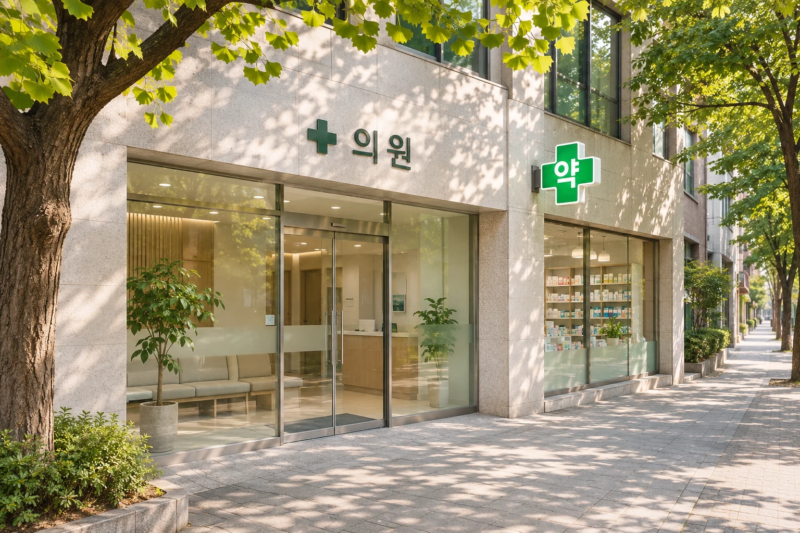

Feel better.
Find your care.
Your guide to healthcare in Korea, from your first symptom to your final receipt.
Find the right careMade for visitors. Useful for residents.

Your guide to healthcare in Korea, from your first symptom to your final receipt.
Find the right careMade for visitors. Useful for residents.
